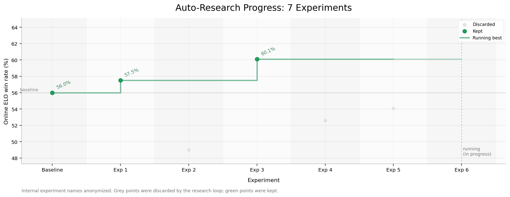

Online Autoresearch：把自动化研究 loop 接到真实线上反馈上
Online Autoresearch: Running Autoresearch with Real Online Feedback
①开源贡献 Open-source Artifacts
这是一篇公司研究博客（engineering blog），不是带开源 release 的 paper。需要特别说明的是：本文没有开源任何 KaonAI 自己的 artifact——无论是 autoresearch harness 的代码、训练出来的 model、还是训练用的数据集，都没有放出。文中出现的 GitHub / Hugging Face / 博客链接，全部是「引用 / 参考，非本文开源」的他方工作（Karpathy、OpenAI、Google、Cursor、Dario Amodei）。下表把这一点逐项核实清楚，避免把「引用的参考」误读成「博客自己的开源」。
| 类型 | 是否本文开源 | 内容 / 链接（核实结论） |
|---|---|---|
| 代码 Code（autoresearch harness） | ✘ | 博客详细描述了 harness 的接口与 loop，但未放出任何代码仓库；也未找到 Kaon Labs / KaonAI 的 GitHub org。文末唯一的行动号召是招聘链接（"come join us"）。 |
| 模型权重 Weights | ✘ | 训练得到的 candidate model（基于 Gemma 4 26B 的 SFT 产物）未开源，仅在自家产品内部 serving。 |
| 数据集 Dataset | ✘ | 训练数据来自清洗自家历史对话（涉及真实用户），未公开。 |
| 环境 / Benchmark | ✘ | 评测用的 online ELO / arena 系统是自家产品内置的线上评测系统，依赖真实流量，不可对外复现，未开源。 |
| 引用 / 参考（非本文开源） | 引用 |
① karpathy/autoresearch（Andrej Karpathy，MIT，已核实存在：让 agent 在单 GPU 上自动跑 nanochat 训练研究）——灵感来源，非本文产出； ② openai/parameter-golf（OpenAI，MIT，已核实存在：把 LM 压进 16MB 的挑战）——引用； ③ google/gemma-4-26B-A4B-it（Google 的 base model，本文拿来做 SFT 的底座，非 KaonAI 发布）； ④ Cursor 的 Composer 2.5 / Composer 2 技术报告 / Tab RL / Real-Time RL for Composer，及 Dario Amodei 的 essay——均为引用。 |
karpathy/autoresearch 或 openai/parameter-golf 当成本博客的开源成果。
②研究动机与贡献 Motivation & Contribution
背景与问题：autoresearch 正在从想法变成工程范式
过去几个月里，autoresearch（让 agent 自动做研究）正从一个有趣的想法演变为可落地的工程范式。Karpathy 的 autoresearch 给出了清晰方向：让 agent 不只是回答问题，而是提出实验、跑训练、读结果、再进入下一轮。类似思路也出现在偏算法搜索 / heuristic learning 的工作里（如 OpenAI 的 Parameter Golf，以及用 agent 在物理仿真环境中发现可解释 heuristic policy 的实验）。Cursor 的 Composer 系列也在反复强调同一点：一个真正有用的 agent，不该只在静态 benchmark 上好看，而应该能在一个逼近真实工作环境的 harness 里持续完成复杂任务。
切入点：offline evaluation 不够，得接真实线上反馈
KaonAI 的关键观察是——offline evaluation 根本不够。在对话模型里，用户偏好往往来自非常细的细节：语气（tone）、节奏（pacing）、回复长度、模型有没有接住上下文、用户还想不想继续聊。这些信号很多 offline metric 是不敏感的。原文说得很直白：
"Loss 能帮你选 checkpoint，但它几乎没法告诉你哪种 data distribution 对线上用户更好。"
更糟的是，他们一开始也保留了 training loss、validation loss、固定 case 的 judge、通用 benchmark 等 offline 辅助信号，结果发现这些信号不仅不能对齐线上主目标，反而会干扰模型的决策——因为 agent「极其容易做错误归因（misattribution）」，把某个 offline 指标的变化错当成线上会变好的依据。于是他们最终只保留 online evaluation。
核心贡献
- 把 autoresearch loop 接到真实线上流量上、并以 online ELO 作为唯一 reward signal。在一个 millions DAU 的消费级 AI-native 产品里，用户在真实使用中对两个模型回复做两两偏好选择，系统聚合成各 candidate model 的 win rate；agent 据此（结合 sample count 与 convergence）决定保留或丢弃实验。当评测、选数据、训练决策全部锚定同一个线上分布时，整个迭代过程是 on-policy 的。
- 用很朴素的算力（单台 8×H100）+ 严格 fixed budget，跑出了真实增益。两天、7 个 SFT 实验，online 偏好 win rate 从 56.0% → 60.1%（best run）。fixed budget 的设计是为了防止 autoresearch 退化成无脑 grid search。
- 得到一个可迁移、且反直觉的结论：对一个本就很强的 base model，fine-tune 是否有效，主要取决于数据分布是否匹配 deployment context distribution，而不是 hyperparameter 调得多细——agent 是「发现了更好的训练分布」，而不是「调出了更好的超参」。
③方法 Method：autoresearch harness 与 agent loop
整体设计可以概括为：一个被严格约束的 harness + 一个能在其上安全组合「研究动作」的 agent。产品本身是一个 millions DAU 的消费级 AI-native 内容平台，内置 arena 式线上评测系统——用户在真实使用中对两个模型回复做偏好选择，系统持续聚合这些选择，为每个 candidate model 计算 ELO。这给了 agent 一个天然、高频的 online reward signal，直接插进它的研究 loop。
整体 loop
完整的循环是：
fetch raw data → filtering → fixed-budget sampling → SFT training → candidate deployment → online ELO evaluation → result aggregation → next experiment硬件规模并不奢侈：单台 8×H100，训练一个 Gemma 4（26B）。每个实验都被限制在固定预算内，而不是让 agent 自由 scale up。默认 setup 为：
- 单节点，8×H100；
- 固定 data budget（fixed data budget）；
- 固定 training recipe；
- 固定 online ELO 评测协议；
- 每个实验只改一个主变量（one primary variable）。
harness 提供的受控接口
harness 给 agent 提供一组受控接口（controlled interfaces），让它能安全地组合研究动作——agent 可以提出 hypothesis、改训练分布、发起实验，但不能任意改动所有变量：
- Data interface：对训练数据做 filter、sample、split。
- Training interface：在一个可比较的 budget 内固定训练过程。
- Deployment interface：把 candidate model 接入内部 serving 与评测栈。
- Evaluation interface：提交 online ELO，读取聚合后的指标。
- Memory interface：持久化上一轮的结论、研究约束（constraints）、下一轮计划。
- Cleanup interface：停止实验、释放资源、清理临时配置。
其中 memory layer 很重要：它记录当前实验约束、已验证的判断、中间 hypothesis 和下一轮计划，让 agent 在长 loop 中不必只依赖即时 context。新想法先被记成 hypothesis，再翻译成 data filter / training config / evaluation 实验；即便一个长任务被打断，agent 也能从这些持久化的 constraints 与 plans 里恢复当前研究方向。
agent 自己「发现」的调度模式：one-step-off pipeline
这是方法里很有意思的一处涌现行为。如果每一轮都严格串行（train → deploy → eval → analyze → next train），整个 loop 会非常慢：online evaluation 要等真实流量、deployment 有 cold start、本地训练资源又不能闲置。跑了多轮之后，agent 逐渐自己收敛到一个「错一拍（one-step-off）」的四 lane 并行调度，把不同资源塞满：
- GPU lane：训练实验 N。
- Network lane：准备 / 上传实验 N−1。
- Remote lane：部署 + online eval 实验 N−1。
- CPU lane：分析实验 N−2 + 准备实验 N+1。
原文点明：如果 agent 频繁闲置，就撑不住研究进度——而这种 one-step-off 的流水线，正是 agent 在 harness 约束下为了「不让任何资源 idle」而自己摸索出来的。
④实验评估 Evaluation
评测设置：win rate 怎么用线上 A/B 流量量出来
- 评测对象：每个 candidate model（基于 Gemma 4 26B 的不同 SFT 产物）。
- 评测方式 / Benchmark：online ELO——所有 candidate 进入同一个真实线上流量池，用户在产品里对两个回复做两两偏好选择（arena / A/B 形式），系统把这些选择聚合成可比较的 win rate。原文强调 ELO 的好处是「简单直接」：信号就是真实用户到底更喜欢哪个回复。
- 对比基线 Baseline：起点是 win rate 56.0% 的 baseline model。
- 指标 Metric：online 偏好 win rate（%），越高越好。agent 综合 win rate、sample count、收敛情况（convergence）来判定保留 / 丢弃。
主要结果：7 个实验的 win rate 轨迹

把图 2 里能读到的点逐一列出（百分比按图中标注 / 刻度读取，灰点为近似值）：
| 实验 | online ELO win rate | 判定 | 说明 |
|---|---|---|---|
| Baseline | 56.0% | 保留（baseline 起点） | running best 起点。 |
| Exp 1 | 57.5% | 保留 ✔ | running best 抬升到 57.5%。 |
| Exp 2 | ≈ 49.0% | 丢弃 ✘ | 明显低于 baseline，被 loop 丢弃。 |
| Exp 3 | 60.1% | 保留 ✔（best） | 本轮最佳结果，running best 跳到 60.1%。 |
| Exp 4 | ≈ 52.6% | 丢弃 ✘ | 低于当前 best。 |
| Exp 5 | ≈ 54.1% | 丢弃 ✘ | 低于当前 best。 |
| Exp 6 | —（running） | 进行中 | 截稿时仍在跑。 |
所以 running best 的轨迹是 56.0% → 57.5% → 60.1%，净提升约 +4.1 个百分点。7 个实验里只有少数被保留，多数被丢弃——这恰恰说明 online ELO 作为筛选信号在真的起作用：agent 不是把每个实验都当成进步，而是用真实用户偏好把大部分尝试挡在了门外。
关键消融 / 分析：「更脏」的数据反而赢了
这是全文最有分量的分析。直觉上我们通常假设：用更强的 expert model 生成训练数据，student model 应该学得更好——expert 的回复更稳、更干净、错误更少，看起来更适合当 teacher。但在 online ELO 里，agent 对比了用不同数据源训练出来的 candidate 的 win rate 曲线，观察到一个反直觉的结果：
用一个相对「没那么 expert」的数据源做 fine-tune，反而打赢了用更强、更干净的 expert 数据。
在分析训练数据与线上结果时，agent 自己提出了一个 hypothesis：这个「更弱」的数据源拥有更异质（heterogeneous）的历史 context——它的对话历史里包含了不同模型、在不同阶段产生的回复，因此更像真实的线上 runtime 环境；而 expert model 的数据虽然更干净、更自洽（self-consistent），却也更像一个封闭分布（closed distribution）。
这个 hypothesis 反过来改变了后续实验方向，正好对应图 2 里的故事线：
- Experiment 1：数据「看起来质量更高」，但没有带来线上提升；
- Experiment 2：teacher 不一定更强，但它的历史分布更接近真实产品流量，于是表现更好；
- Experiment 3：进一步放大这个 distribution-matching 信号，成为本轮迭代的最佳结果（60.1%）。
⑤洞见 Insights
- 分布匹配 > 调参。对一个已经很强的 base model，fine-tune 是否有效，往往取决于你喂的数据是否真的匹配 deployment context distribution，而不是 hyperparameter grid 扫得多细。agent 的增益来自「发现了更好的训练分布」，不是「调出了更好的超参」。
- 「更脏 / 更杂」可能正是优点。包含多个模型、多个阶段回复的异质历史，比单一 expert 的干净数据更像线上真实环境；过于干净、自洽的数据反而是个封闭分布，与部署时遇到的输入分布脱节。
- reward signal 选错会主动误导 agent。offline metric（loss、固定 case judge、通用 benchmark）不仅不敏感于 tone / pacing / 长度等真实偏好信号，还会诱导 agent 做错误归因。把 reward 收敛到唯一的真实线上目标，反而让整个 loop 更干净、更 on-policy。
- harness 的约束本身就是方法。fixed budget + 每次只改一个变量，防止 autoresearch 退化成无法归因的 grid search；而「不让资源 idle」这种工程约束，竟能让 agent 自发涌现出 one-step-off 的并行调度。
局限与未来
作者自己点了两个主要局限，并给出下一步方向：
- 反馈周期还是偏长。online ELO 和 Session A/B 虽然都是真实线上反馈，但要累积足够多的用户选择才收敛——单次判断常常要几十分钟到数小时。下一步想做一个更实时的 online evaluation 系统：仍源自真实用户 / 真实产品行为，但能更快产出稳定可用的本地信号，把研究 loop 从「每轮几小时」压缩到「每轮几十分钟」。
- 当前还不是真正的 on-policy 数据。现在的训练数据来自清洗历史对话，并不是「正在被训练的那个模型自己采样出来的」on-policy 数据。下一步想让已部署的模型把自己的真实交互数据直接作为下一轮训练的输入，让每一轮的训练分布就是部署分布，形成 on-policy data flywheel：更好的模型 → 更高质量的线上交互 → 更好的训练数据 → 更好的模型。
从我个人的判断看，这篇博客的样本量与统计严谨度（灰点 win rate 只能从图里近似读、未给置信区间 / 显著性）决定了它更像一份工程实践报告而非严格论文；「dirtier data wins」也很可能强依赖于「对话产品 + 历史对话即训练数据」这一特定 setting，未必能无条件外推到别的任务。但它把「online reward + on-policy 迭代」这条路用很小的算力跑通并拿到正增益，方法论上的启发是实打实的。
与相关工作的关系
按本文自身的论述，它把 Karpathy 的 autoresearch（agent 自动提实验、跑训练、读结果、再迭代）这条线，从 Karpathy 原版的「单 GPU 上自动跑 nanochat 训练、用 validation 指标自评」推进到了用真实线上用户偏好作为 reward 的版本。它与 OpenAI Parameter Golf、以及在物理仿真里用 agent 发现可解释 heuristic policy 的工作，共享「让 agent 做算法 / 启发式搜索」的精神；而与 Cursor 的 Composer 系列 / Tab RL / Real-Time RL for Composer 最为同频——都强调 agent 要在逼近真实工作环境的 harness 里被评测，Cursor 已在 code completion / 多文件编辑里验证了类似的 on-policy loop，本文则把它搬到了消费级对话产品的真实线上流量上。文末引用 Dario Amodei 「a country of geniuses in a datacenter」的比喻收尾：真正重要的也许不只是模型多聪明，而是我们能否为这些 agent 造出足够好的 harness——让它们接触真实反馈、遵守实验约束、积累长期 memory，把能力转化成可验证的进展。